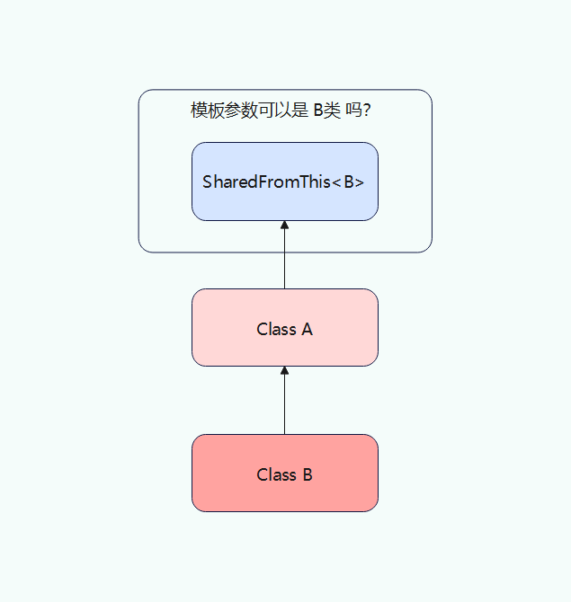
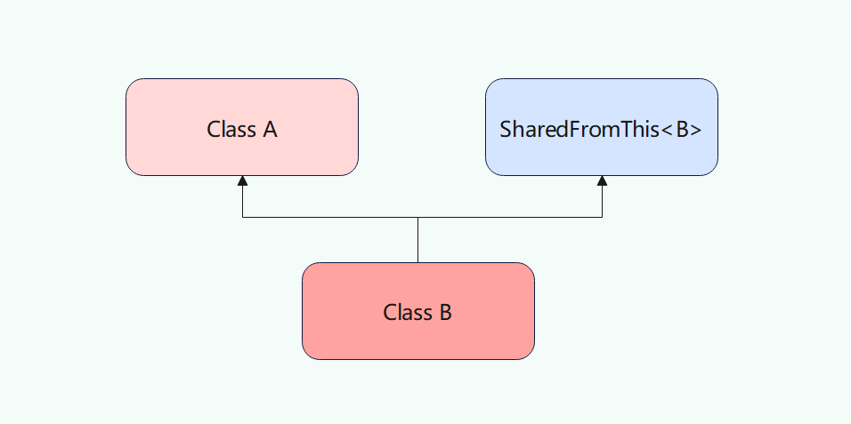

# C++ 智能指针 复刻简介：为了能让基础稍微弱一点的同学也能很好地理解，本篇会先总结三种智能指针的实现思路，再将智能指针的各个功能用代码具体实现出来 ，其中会涉及模板偏特化，左右值，原子性操作等 C++ 知识点，本文默认读者已掌握。
# 智能指针实现原理实现智能指针的关键在于怎么维护对象的引用计数器 (RefCounter)，以下是我们要实现的智能指针的类图：
先解释上面每个类的作用和联系：
ObjectType：用来创建共享指针的类，必须继承自 "SharedFromThis" (只用 "MyUniquePtr" 则不需要)，原因后面解释 RefCounter：每个 "ObjectType" 对象只能被一个 "RefCounter" 引用，因为 "RefCounter" 负责该对象最终的析构，如果两个 "RefCounter" 同时引用同一个对象，则会导致该对象尚被引用却被析构的后果 SharedFromThis：所有需要使用 "MySharedPtr" 和 "MyWeakPtr" 的类都应继承于此类，因为其中有一个指向自身的 "MyWeakPtr"，我们可以通过这个 "WeakPtrToSelf" 来得知该对象是否已被某个 "RefCounter" 引用。如此可以避免二次创建 "RefCounter" 导致该对象尚被引用却被析构的后果 MySharedPtr：共享指针类，里面有 一个引用计数器 和 一个引用对象的指针 MyWeakPtr：弱指针类，里面有 一个引用计数器 和 一个引用对象的指针。弱指针的引用计数器和共享指针的引用是完全一样的，只是对其操作不同 RefController：对 "RefCounter" 进行操作的类，包括增加计数，减少计数等 我们这次要实现的共享指针是支持选择是否线程安全的，但写者用的是 visual studio 2019，并不支持 GCC 的 "__sync_fetch_and_add" 语法。我们支持的是 atomic 库中的类，所以我们不能像 unreal 那么实现，必须另辟蹊径。那这里我选择直接用模板偏特化分别实现线程安全和非线程安全的引用计数器 (RefCounter)，以下是代码实现：
# RefCounter
RefCounter 1 2 3 4 5 6 7 8 9 10 11 12 13 14 15 16 17 18 19 20 21 22 23 24 25 26 27 28 29 30 31 32 33 34 35 36 37 38 39 40 41 42 43 44 45 46 47 48 49 50 51 52 53 54 55 56 57 58 59 Enum ESPMode { ThreadNotSafe = 0 ; ThreadSafe = 1 ; } template < ESPMode Mode >class RefCounter ;template <>class RefCounter <{ public : RefCounter () : SharedCount (1 ) , WeakCount (1 ) { } virtual void DestroyObject () public : int SharedCount; int WeakCount; } template <>class RefCounter <{ public : RefCounter () : SharedCount (1 ) , WeakCount (1 ) { } virtual void DestroyObject () private : std::atomicint SharedCount; std::atomicint WeakCount; } template < typename ObjectType, ESPMode Mode >class RefCounterWithDeleter :public RefCounter< Mode >;{ public : RefCounterWithDeleter ( ObjectType* InRefObj ) : RefObj (InRefObj) { } void DestroyObject () override { delete ReferenceObject; } private : ObjectType* RefObj; }
两个类基本一致，只是计数使用的数据类型不同，分别是 int 和 atomic<int>。"RefCounterWithDeleter" 会在 "SharedCount" 减至零时调用 "DestroyObject"，将 "RefObj" 给析构掉。而 "RefCounter" 的析构会等到 "WeakCount" 减至零时在 "RefController" 的 "ReleaseWeakCount" 函数中进行。单独将 "RefObj" 用 "RefCounter" 的子类包起来，是为了可以隐藏 "RefCounter" 的引用对象类型，方便后面指针赋值 (模板对象指针会对模板参数类型做检查)
# RefController
RefController 1 2 3 4 5 6 7 8 9 10 11 12 13 14 15 16 17 18 19 20 21 22 23 24 25 26 27 28 29 30 31 32 33 34 35 36 37 38 template < ESPMode Mode >class RefController { public : static int AddSharedCount (RefCounter<Mode>* InSharedCounter) { return ++InSharedCounter->SharedCount; } static void ReleaseSharedCount (RefCounter<Mode>* InSharedCounter) { std::cout << "Release Shared Counter, Current Shared Counter is " << InSharedCounter->SharedCount - 1 << std::endl; if (--InSharedCounter->SharedCount == 0 ) { InSharedCounter->DestroyObject (); ReleaseWeakCount (InSharedCounter); } } static int AddWeakCount (RefCounter<Mode>* InWeakCounter) { return ++InWeakCounter->WeakCount; } static void ReleaseWeakCount (RefCounter<Mode>* InWeakCounter) { std::cout << "Release Weak Counter, Current Weak Counter is " << InWeakCounter->WeakCount - 1 << std::endl; if (--InWeakCounter->WeakCount == 0 ) { delete InWeakCounter; } } };
需要注意的是，如果调用 "ReleaseSharedCount" 函数时，"SharedCount" 降至零后，需要调用析构该对象的同时，减少一次弱指针计数。为什么？因为我们在创建引用计数器 (RefCounter) 时是将 "SharedCount" 和 "WeakCount" 同时初始化为 1 的。那如果该对象继承自 "SharedFromThis" 呢？"SharedFromThis" 中的 "WeakPtrToSelf" 怎么处理？跟普通 "MyWeakPtr" 一样处理。创建时弱引用计数加一，析构时弱引用计数减一，但该弱引用不应改变指向。
接下来我们要实现 "SharedFromThis" 类，继承自该类的对象可以通过 "WeakPtrToSelf" 得知自己是否已被 "RefCounter" 引用 ("MySharedPtr" 的构造函数中用到)。创建共享指针的对象不一定要继承自该类 ，如果不继承该类，程序员应保证不用该对象创建第二个 "RefCounter"。
# SharedFromThis
SharedFromThis 1 2 3 4 5 6 7 8 9 10 11 12 13 14 15 16 17 18 19 20 21 22 23 24 25 26 27 28 29 30 31 32 33 34 35 36 37 38 39 40 41 42 43 44 45 46 template < typename ObjectType, ESPMode Mode >class MySharedPtr ;template < typename ObjectType, ESPMode Mode >class MyWeakPtr ;template < typename ObjectType, ESPMode Mode >class SharedFromThis { public : template < class SharedPtrType , class OtherType > void UpdateWeakReferenceInternal (MySharedPtr< SharedPtrType, Mode > const * InSharedPtr, OtherType* InObject) const inline bool DoesSharedInstanceExist () const { return WeakThis.IsValid (); } private : mutable MyWeakPtr< ObjectType, Mode > WeakPtrToSelf; protected : SharedFromThis (){ } SharedFromThis (SharedFromThis const &){ } SharedFromThis& operator =(SharedFromThis const &){ return *this ; } ~SharedFromThis (){ } } template < typename ObjectType, ESPMode Mode>template < class SharedPtrType , class OtherType >void SharedFromThis<ObjectType, Mode>::UpdateWeakReferenceInternal (MySharedPtr< SharedPtrType, Mode > const * InSharedPtr, OtherType* InObject) const { if (!WeakPtrToSelf.IsValid ()) { WeakPtrToSelf = MySharedPtr< ObjectType, Mode >(*InSharedPtr, InObject); } }
一般我们用普通指针创建共享指针的时候 都会先调用 "DoesSharedInstanceExist" 来确定，该对象是否已有 "RefCounter" 引用。如果有，则直接通过 "WeakPtrToSelf" 来获取这个 "RefCounter"，否则直接调用 "MySharedPtr" 的构造函数生成一个 "RefCounter"。实例代码如下：
RawPtrCreateSharedPtr 1 2 3 4 5 6 7 8 9 10 11 12 13 14 15 16 17 18 19 class Test :public SharedFromThis{ } int main () Test* test = new Test (); if (!test->WeakPtrToSelf.IsValid ()) { MySharedPtr<Test> SharedPtr_1 = new MySharedPtr<Test>(test); } else { MySharedPtr<Test> SharedPtr_1 = WeakPtrToSelf.Pin (); } }
正片开始，接下来我们要实现 "MySharedPtr"，在写代码之前要先明确我们需要 "MySharedPtr" 支持什么功能，以下是我预设的功能：
可选择是否线程安全，默认为非线程安全 支持动态类型转换，支持下行转换 实现别名构造函数，解决多继承出现的引用问题 可以用指向子类的 "MySharedPtr" 来构造该 "MySharedPtr" 可以用指向子类的 "MyWeakPtr" 来构造该 "MySharedPtr" (如果 MyWeakPtr 有效) "MySharedPtr" 的左值 / 右值赋值函数 "Reset" 和 "IsValid" 函数 重载 "*", "->" 运算符 实现获取引用计数的函数 以下是代码实现和解析：
# EnableSharedFromThis
EnableSharedFromThis 1 2 3 4 5 6 7 8 9 10 11 12 13 14 15 16 17 18 19 20 21 22 23 24 25 26 27 28 29 30 31 32 33 34 template < class SharedPtrType , class ObjectType , class OtherType , ESPMode Mode >void EnableSharedFromThis (MySharedPtr< SharedPtrType, Mode >* InSharedPtr, ObjectType const * InObject, SharedFromThis< OtherType, Mode > const * InSharedable) template < class SharedPtrType , class ObjectType , class OtherType , ESPMode Mode >void EnableSharedFromThis (MySharedPtr< SharedPtrType, Mode > const * InSharedPtr, ObjectType const * InObject, SharedFromThis< OtherType, Mode > const * InSharedable) void EnableSharedFromThis (...) template < class SharedPtrType , class ObjectType , class OtherType , ESPMode Mode >void EnableSharedFromThis (MySharedPtr< SharedPtrType, Mode >* InSharedPtr, ObjectType const * InObject, SharedFromThis< OtherType, Mode > const * InSharedable) if (InShareable != nullptr ) { InShareable->UpdateWeakReferenceInternal (InSharedPtr, const_cast <ObjectType*>(InObject)); } } template < class SharedPtrType , class ObjectType , class OtherType , ESPMode Mode >void EnableSharedFromThis (MySharedPtr< SharedPtrType, Mode > const * InSharedPtr, ObjectType const * InObject, SharedFromThis< OtherType, Mode > const * InSharedable) if (InShareable != nullptr ) { InShareable->UpdateWeakReferenceInternal (InSharedPtr, const_cast <ObjectType*>(InObject)); } }
# 前期工作
pre 1 2 3 4 5 6 7 8 9 10 11 12 13 14 15 16 17 18 19 20 21 22 template <typename T>struct TIdentity { typedef T Type; }; template <typename T>inline T ImplicitConv (typename TIdentity<T>::Type Obj) return Obj; } template < typename ObjectType, ESPMode Mode = ESPMode::ThreadNotSafe > class MySharedPtr;template < typename ObjectType, ESPMode Mode = ESPMode::ThreadNotSafe > class MyWeakPtr;template < typename ObjectType, ESPMode Mode = ESPMode::ThreadNotSafe > class SharedFromThis;
# MySharedPtr -> Constructor
MySharedPtr.Constructor.h 1 2 3 4 5 6 7 8 9 10 11 12 13 14 15 16 17 18 19 20 21 22 23 24 25 26 27 28 29 30 31 32 33 34 35 36 37 38 39 40 41 42 43 44 45 46 47 48 49 50 51 52 53 54 55 56 57 58 59 60 61 62 63 64 65 66 67 68 69 70 71 72 73 74 75 76 77 78 79 80 81 82 83 84 85 86 87 88 89 90 91 92 93 94 95 96 97 98 99 100 101 102 103 104 105 106 107 108 109 110 111 112 113 114 115 116 117 118 119 120 121 122 template < typename ObjectType, ESPMode Mode >class MySharedPtr { public : __forceinline MySharedPtr () : Object(nullptr) , SharedCounter(nullptr) { } template < typename OtherType, typename = decltype (ImplicitConv<ObjectType*>((OtherType*) nullptr )) > __forceinline MySharedPtr (OtherType* InObjPtr) : Object (InObjPtr) , SharedCounter (new RefCounterWithDeleter< ObjectType, Mode >(InObjPtr)) { EnableSharedFromThis (this , InObjPtr, InObjPtr); } template < typename OtherType > __forceinline MySharedPtr (MySharedPtr< OtherType, Mode > const & OtherSharedPtr, ObjectType* InObject) : Object(InObject) , SharedCounter(OtherSharedPtr.SharedCounter) { if (SharedCounter && SharedCounter->SharedCount > 0 ) { RefController< Mode >::AddSharedCount (SharedCounter); } } template < typename OtherType > __forceinline MySharedPtr (MySharedPtr< OtherType, Mode >&& OtherSharedPtr, ObjectType* InObject) : Object(InObject) , SharedCounter(OtherSharedPtr.SharedCounter) { OtherSharedPtr.Object = nullptr ; OtherSharedPtr.SharedCounter = nullptr ; } template < typename OtherType, typename = decltype (ImplicitConv<ObjectType*>((OtherType*) nullptr )) > __forceinline MySharedPtr (MySharedPtr < OtherType, Mode > const & InSharedPtr) : Object (InSharedPtr.Object) , SharedCounter (InSharedPtr.SharedCounter) { if (SharedCounter && SharedCounter->SharedCount > 0 ) { RefController< Mode >::AddSharedCount (SharedCounter); } } __forceinline MySharedPtr ( MySharedPtr const & InSharedPtr ) : Object(InSharedPtr.Object) , SharedCounter(InSharedPtr.SharedCounter) { if (SharedCounter && SharedCounter->SharedCount > 0 ) { RefController< Mode >::AddSharedCount (SharedCounter); } } __forceinline MySharedPtr ( MySharedPtr && InSharedPtr ) noexcept : Object(InSharedPtr.Object) , SharedCounter(InSharedPtr.SharedCounter) { InSharedPtr.Object = nullptr ; InSharedPtr.SharedCounter = nullptr ; } ~MySharedPtr () { if (SharedCounter && SharedCounter->SharedCount > 0 ) { RefController< Mode >::ReleaseSharedCount (SharedCounter); } } private : template < typename OtherType, typename = decltype (ImplicitConv<ObjectType*>((OtherType*) nullptr )) > __forceinline explicit MySharedPtr (MyWeakPtr < OtherType, Mode > const & InWeakPtr) : Object (nullptr ) , SharedCounter (InWeakPtr.WeakCounter) { if (SharedCounter && SharedCounter->SharedCount > 0 ) { Object = InWeakPtr.Object; RefController< Mode >::AddSharedCount (SharedCounter); } } template < typename OtherType, typename = decltype (ImplicitConv<ObjectType*>((OtherType*) nullptr )) > __forceinline explicit MySharedPtr (MyWeakPtr < OtherType, Mode>&& InWeakPtr) : Object (nullptr ) , SharedCounter (InWeakPtr.WeakCounter) { if (SharedCounter && SharedCounter->SharedCount > 0 ) { Object = InWeakPtr.Object; RefController< Mode >::AddSharedCount (SharedCounter); } RefController< Mode >::ReleaseWeakCount (InWeakPtr.WeakCounter); InWeakPtr.Object = nullptr ; InWeakPtr.WeakCounter = nullptr ; } private : template < class OtherType , ESPMode OtherMode >friend class MyWeakPtr ; template < class OtherType , ESPMode OtherMode >friend class MySharedPtr ; template < class OtherType , ESPMode OtherMode >friend class SharedFromThis ; ObjectType* Object; mutable RefCounter< Mode >* SharedCounter; }
以上分别定义了 默认构造函数，拷贝移动构造函数，子类构造函数，别名构造函数，弱指针构造函数，分别对应不同的应用场景，难点在于弄清楚前期工作代码块的意义和别名构造函数的作用，现在看不懂也没关系，我会在下文中做进一步解析。另外，以上所有构造函数都会在下文中进行代码测试
# MySharedPtr -> operator =
MySharedPtr.operator 1 2 3 4 5 6 7 8 9 10 11 12 13 14 15 16 17 18 19 20 21 22 23 24 25 26 27 28 29 30 31 32 33 34 35 36 37 38 __forceinline void Reset () *this = MySharedPtr< ObjectType, Mode >(); } __forceinline MySharedPtr& operator =(MySharedPtr const & InSharedPtr) { if (SharedCounter && SharedCounter->SharedCount > 0 ) { RefController< Mode >::ReleaseSharedCount (SharedCounter); } Object = InSharedPtr.Object; SharedCounter = InSharedPtr.SharedCounter; if (SharedCounter && SharedCounter->SharedCount > 0 ) { RefController< Mode >::AddSharedCount (SharedCounter); } return *this ; } __forceinline MySharedPtr& operator =(MySharedPtr&& InSharedPtr) { if (InSharedPtr == *this ) return *this ; if (SharedCounter && SharedCounter->SharedCount > 0 ) { RefController< Mode >::ReleaseSharedCount (SharedCounter); } Object = InSharedPtr.Object; SharedCounter = InSharedPtr.SharedCounter; InSharedPtr.Object = nullptr ; InSharedPtr.SharedCounter = nullptr ; return *this ; }
这里需要先解释一下，为什么虚幻中不支持智能指针的上行转换？
首先我们确认实现智能指针上行转换的步骤，先重置当前智能指针，再用指向子类的智能指针来初始化这个上行转换的指针，那就是 "Reset" 后调用子类构造函数而已。
根据我们用智能指针的习惯，一般不用了会直接 "Reset" 掉，而不是留着不用的智能指针等待下次使用。
如果真的想上行转换，也可以直接调用子类构造函数获得一个新的基类智能指针。所以没有必要实现上行转换，避免代码冗余
# MySharedPtr -> OtherFunc
MySharedPtr.OtherFunc 1 2 3 4 5 6 7 8 9 10 11 12 13 14 15 16 17 18 19 20 21 22 23 24 25 26 27 28 29 30 31 32 33 34 35 36 37 38 template <class T >struct MakeReferenceTo { typedef T& Type; }; __forceinline const bool IsValid () const return Object != nullptr ; } __forceinline ObjectType* Get () const return Object; } __forceinline typename MakeReferenceTo< ObjectType >::Type operator *() const { return *Object; } __forceinline ObjectType* operator ->() const { return Object; } __forceinline const int GetSharedCount () const return SharedCounter->SharedCount; } template < class ObjectTypeA , class ObjectTypeB , ESPMode Mode >__forceinline bool operator ==(MySharedPtr< ObjectTypeA, Mode > const & InSharedPtrA, MySharedPtr< ObjectTypeB, Mode > const & InSharedPtrB) { return InSharedPtrA.Get () == InSharedPtrB.Get (); }
到此，"MySharedPtr" 的实现算是完成了。在开始实现 "MyWeakPtr" 之前，我们还得解决一些问题（别名函数的存在意义）。
Q1 : 如下图，某类继承自 "SharedFromThis" 模板类，那么 "SharedFromThis" 的模板参数可以是该类的子类吗？为什么？

A1：不行！因为不可以用子类指针指向一个父类对象，测试代码如下：
Test1 1 2 3 4 5 6 7 8 9 10 11 12 13 14 15 16 17 18 19 20 21 22 23 24 25 26 27 28 29 30 31 32 33 34 35 36 37 38 39 40 41 42 43 44 45 46 47 48 49 50 int main () A* a = new A (); MySharedPtr<A> Sp_a = new MySharedPtr<A>(a); } template < typename OtherType, typename = decltype (ImplicitConv<ObjectType*>((OtherType*) nullptr )) >__forceinline MySharedPtr (OtherType* InObjPtr) : Object (InObjPtr) , SharedCounter (new RefCounterWithDeleter< ObjectType, Mode >(InObjPtr)) { EnableSharedFromThis (this , InObjPtr, InObjPtr); } template < class SharedPtrType , class ObjectType , class OtherType , ESPMode Mode >void EnableSharedFromThis (MySharedPtr< SharedPtrType, Mode >* InSharedPtr, ObjectType const * InObject, SharedFromThis< OtherType, Mode > const * InSharedable) if (InShareable != nullptr ) { InShareable->UpdateWeakReferenceInternal (InSharedPtr, const_cast <ObjectType*>(InObject)); } } void SharedFromThis<ObjectType, Mode>::UpdateWeakReferenceInternal (MySharedPtr< SharedPtrType, Mode > const * InSharedPtr, OtherType* InObject) const { if (!WeakPtrToSelf.IsValid ()) { WeakPtrToSelf = MySharedPtr< ObjectType, Mode >(*InSharedPtr, InObject); } } template < typename OtherType >__forceinline MySharedPtr ( MySharedPtr< OtherType, Mode > const & OtherSharedPtr, ObjectType* InObject ) : Object(InObject) , SharedCounter(OthersharedPtr.SharedCounter) { if (SharedCounter && SharedCounter.SharedCount > 0 ) { RefController< ObjectType, Mode >::AddSharedCount (SharedCounter); } }
上面是代码的执行流程，以及模板参数的类型变化过程，最后会因为别名构造函数的参数不匹配为报错。
所以，SharedFromThis 的模板参数 "ObjectType" 必须是直接继承类 "A" ！
Q2：类图和代码如下，问：输出结果是什么，为什么？

Q2 1 2 3 4 5 6 7 8 int main () B* b = new B (); MySharedPtr<A> Sp_a = MySharedPtr<A>(b); cout << b->DoesSharedInstanceExist (); }
A1：输出 1，也就是 "b" 的 "WeakPtrToSelf" 已被初始化。执行路径如下：
A2 1 2 3 4 5 6 7 8 9 10 11 12 13 14 15 16 17 18 19 20 21 22 23 24 25 26 27 28 29 30 31 32 33 34 35 36 37 38 39 40 41 template < typename OtherType, typename = decltype (ImplicitConv<ObjectType*>((OtherType*) nullptr )) >__forceinline MySharedPtr (OtherType* InObjPtr) : Object (InObjPtr) , SharedCounter (new RefCounterWithDeleter< ObjectType, Mode >(InObjPtr)) { EnableSharedFromThis (this , InObjPtr, InObjPtr); } template < class SharedPtrType , class ObjectType , class OtherType , ESPMode Mode >void EnableSharedFromThis (MySharedPtr< SharedPtrType, Mode >* InSharedPtr, ObjectType const * InObject, SharedFromThis< OtherType, Mode > const * InSharedable) if (InShareable != nullptr ) { InShareable->UpdateWeakReferenceInternal (InSharedPtr, const_cast <ObjectType*>(InObject)); } } void SharedFromThis<ObjectType, Mode>::UpdateWeakReferenceInternal (MySharedPtr< SharedPtrType, Mode > const * InSharedPtr, OtherType* InObject) const { if (!WeakPtrToSelf.IsValid ()) { WeakPtrToSelf = MySharedPtr< ObjectType, Mode >(*InSharedPtr, InObject); } } template < typename OtherType >__forceinline MySharedPtr ( MySharedPtr< OtherType, Mode > const & OtherSharedPtr, ObjectType* InObject ) : Object(InObject) , SharedCounter(OthersharedPtr.SharedCounter) { if (SharedCounter && SharedCounter.SharedCount > 0 ) { RefController< ObjectType, Mode >::AddSharedCount (SharedCounter); } }
所以，别名构造函数是支持多继承类创建共享指针的基石 ，C++ 通常是面向接口编程，多继承类随处可见，别名构造函数非常有必要！
总算是弄明白了 别名构造函数 和 "SharedFromThis" 类的意义辽，那咱继续实现 "WeakPtr" 吧 😃
# MyWeakPtr ->Constructor
MyWeakPtr.Constructor 1 2 3 4 5 6 7 8 9 10 11 12 13 14 15 16 17 18 19 20 21 22 23 24 25 26 27 28 29 30 31 32 33 34 35 36 37 38 39 40 41 42 43 44 45 46 47 48 49 50 51 52 53 54 55 56 57 58 59 60 61 62 63 64 65 66 67 68 69 70 71 72 73 74 75 template < typename ObjectType, ESPMode Mode >class MyWeakPtr { public : __forceinline MyWeakPtr () : Object(nullptr) , WeakCounter(nullptr) { } template < typename OtherType, typename = decltype (ImplicitConv< ObjectType* >((OtherType*)nullptr )) > __forceinline MyWeakPtr (MySharedPtr< OtherType, Mode > const & InSharedPtr) : Object (InSharedPtr.Object) , WeakCounter (InSharedPtr.SharedCounter) { if (WeakCounter) { RefController< Mode >::AddWeakCount (WeakCounter); } } template < typename OtherType, typename = decltype (ImplicitConv< ObjectType* >((OtherType*)nullptr )) > __forceinline MyWeakPtr (MyWeakPtr< OtherType, Mode > const & InWeakPtr) : Object (InWeakPtr.Object) , WeakCounter (InWeakPtr.WeakCounter) { if (WeakCounter) { RefController< Mode >::AddWeakCount (WeakCounter); } } template < typename OtherType, typename = decltype (ImplicitConv< ObjectType* >((OtherType*)nullptr )) > __forceinline MyWeakPtr (MyWeakPtr< OtherType, Mode >&& InWeakPtr) : Object (InWeakPtr.Object) , WeakCounter (InWeakPtr.WeakCounter) { InWeakPtr.Object = nullptr ; InWeakPtr.WeakCounter = nullptr ; } __forceinline MyWeakPtr (MyWeakPtr const & InWeakPtr) : Object(InWeakPtr.Object) , WeakCounter(InWeakPtr.WeakCounter) { if (WeakCounter) { RefController< Mode >::AddWeakCount (WeakCounter); } } __forceinline MyWeakPtr (MyWeakPtr&& InWeakPtr) noexcept : Object(InWeakPtr.Object) , WeakCounter(InWeakPtr.WeakCounter) { InWeakPtr.Object = nullptr ; InWeakPtr.WeakCounter = nullptr ; } ~MyWeakPtr () { if (WeakCounter) { RefController< Mode >::ReleaseWeakCount (WeakCounter); } } private : template < class OtherType , ESPMode OtherMode >friend class MyWeakPtr ; template < class OtherType , ESPMode OtherMode >friend class MySharedPtr ; ObjectType* Object; mutable RefCounter< Mode >* WeakCounter; }
代码实现跟 "MySharedPtr" 如出一辙，我们不做过多赘述，"MyWeakPtr" 我们只实现默认构造函数，拷贝移动构造函数，子类构造函数 和 "MySharedPtr" 构造函数 (左右值共用)。
# MyWeakPtr -> operator=
MyWeakPtr.operator 1 2 3 4 5 6 7 8 9 10 11 12 13 14 15 16 17 18 19 20 21 22 23 24 25 26 27 28 29 30 31 32 33 34 35 36 37 38 39 40 41 42 43 44 45 46 47 48 49 50 51 52 53 54 55 56 57 58 59 60 61 62 63 64 65 66 67 68 69 70 71 72 73 74 75 76 77 78 79 80 81 82 83 84 85 86 87 88 89 90 91 92 __forceinline void Reset () *this = MyWeakPtr< ObjectType, Mode >(); } __forceinline MyWeakPtr& operator =(MyWeakPtr const & InWeakPtr) { if (WeakCounter) { RefController< Mode >::ReleaseWeakCount (WeakCounter); } Object = InWeakPtr.Object; WeakCounter = InWeakPtr.WeakCounter; if (WeakCounter) { RefController< Mode >::AddWeakCount (WeakCounter); } return *this ; } __forceinline MyWeakPtr& operator =(MyWeakPtr&& InWeakPtr) noexcept { if (*this == InWeakPtr) return *this ; if (WeakCounter) { RefController< Mode >::ReleaseWeakCount (WeakCounter); } Object = InWeakPtr.Object; WeakCounter = InWeakPtr.WeakCounter; InWeakPtr.Object = nullptr ; InWeakPtr.WeakCounter = nullptr ; return *this ; } template < typename OtherType, typename decltype (ImplicitConv< ObjectType* >((OtherType*)nullptr )) >__forceinline MyWeakPtr& operator =(MyWeakPtr< OtherType, Mode >&& InWeakPtr){ if (*this == InWeakPtr) return *this ; if (WeakCounter) { RefController< Mode >::ReleaseWeakCount (WeakCounter); } Object = InWeakPtr.Object; WeakCounter = InWeakPtr.WeakCounter; InWeakPtr.Object = nullptr ; InWeakPtr.WeakCounter = nullptr ; return *this ; } template < typename OtherType, typename = decltype (ImplicitConv< ObjectType* >((OtherType*)nullptr )) >__forceinline MyWeakPtr& operator =(MyWeakPtr< OtherType, Mode > const & InWeakPtr) { if (WeakCounter) { RefController< Mode >::ReleaseWeakCount (WeakCounter); } Object = InWeakPtr.Pin ().Get (); WeakCounter = InWeakPtr.WeakCounter; if (WeakCounter) { RefController< Mode >::AddWeakCount (WeakCounter); } return *this ; } template < typename OtherType, typename = decltype (ImplicitConv< ObjectType* >((OtherType*)nullptr )) >__forceinline MyWeakPtr& operator =(MySharedPtr< OtherType, Mode > const & InSharedPtr) { if (WeakCounter) { RefController< Mode >::ReleaseWeakCount (WeakCounter); } Object = InSharedPtr.Object; WeakCounter = InSharedPtr.SharedCounter; if (WeakCounter) { RefController< Mode >::AddWeakCount (WeakCounter); } return *this ; }
分别实现了左值和右值赋值，子类的左值和右值赋值，以及 "MySharedPtr" 赋值（左右值共用）
# MyWeakPtr.OtherFunc
MyWeakPtr.OtherFunc 1 2 3 4 5 6 7 8 9 10 11 12 13 14 15 16 17 18 19 20 21 22 23 24 25 26 27 __forceinline MySharedPtr< ObjectType, Mode > Pin () const & return MySharedPtr< ObjectType, Mode >(*this ); } __forceinline MySharedPtr< ObjectType, Mode > Pin () && return MySharedPtr< ObjectType, Mode >(move (*this )); } __forceinline const bool IsValid () const return Object != nullptr && WeakCounter != nullptr && WeakCounter->SharedCount > 0 ; } __forceinline const int GetWeakCount () const return WeakCounter->WeakCount; } template < class ObjectTypeA , class ObjectTypeB , ESPMode Mode >__forceinline bool operator ==(MyWeakPtr< ObjectTypeA, Mode > const & InWeakPtrA, MyWeakPtr< ObjectTypeB, Mode > const & InWeakPtrB) { return InWeakPtrA.Pin ().Get () == InWeakPtrB.Pin ().Get (); }
到此，所有函数咱都实现完了（UniquePtr 跟着俩没关联的，最后再实现）。开始测试！
测试代码：
Test 1 2 3 4 5 6 7 8 9 10 11 12 13 14 15 16 17 18 19 20 21 22 23 24 25 26 27 28 29 30 31 32 33 34 35 36 37 38 39 40 41 42 43 44 45 46 47 48 49 50 51 52 53 54 55 56 57 58 59 60 61 62 63 64 65 66 67 68 69 70 71 72 73 74 75 76 77 78 79 80 81 82 83 84 85 86 87 88 89 90 91 92 93 94 95 96 97 98 99 100 101 102 103 104 105 106 107 108 109 110 111 112 113 114 115 116 117 118 119 120 121 122 123 124 125 126 127 128 129 130 131 132 133 134 135 136 137 138 139 140 141 142 143 144 145 146 147 148 149 150 151 152 153 154 155 156 157 158 159 160 161 162 163 164 165 166 167 168 169 170 171 172 173 174 175 176 177 178 179 180 181 182 183 184 185 186 187 class Test { public : virtual void Display () "Test" << std::endl; } }; class Test_De :public SharedFromThis<Test_De> , public Test{ public : Test_De (){} public : int i = 1 ; void Display () "Test_De" << std::endl; } }; int main () std::cout << "测试 构造函数:" << std::endl; MySharedPtr< Test > SharedPtr_Test_1 (new Test_De()) ; std::cout << "test_de_1 shared pointer num is " << SharedPtr_Test_1.GetSharedCount () << std::endl; MySharedPtr< Test_De > SharedPtr_TestDe_2 (new Test_De()) ; std::cout << "test_de_2 shared pointer num is " << SharedPtr_TestDe_2.GetSharedCount () << std::endl; MySharedPtr< Test_De > SharedPtr_Test_3 (new Test_De()) ; std::cout << "test_de_3 shared pointer num is " << SharedPtr_Test_3.GetSharedCount () << std::endl; MySharedPtr< Test_De > SharedPtr_TestDe_4 = MySharedPtr< Test_De >(); std::cout << "SharedPtr_TestDe_4 is Object is Valid ? " << ((SharedPtr_TestDe_4.Get () != nullptr ) ? "true" : "false" ) << std::endl; MySharedPtr< Test > SharedPtr_Test_5 (SharedPtr_TestDe_2) ; std::cout << "test_de_2 shared pointer num is " << SharedPtr_Test_5.GetSharedCount () << std::endl; MySharedPtr< Test_De > SharedPtr_TestDe_6 (SharedPtr_TestDe_2) ; std::cout << "test_de_2 shared pointer num is " << SharedPtr_TestDe_6.GetSharedCount () << std::endl; MySharedPtr< Test_De > SharedPtr_TestDe_7 (std::move(SharedPtr_TestDe_6)) ; std::cout << "test_de_2 shared pointer num is " << SharedPtr_TestDe_7.GetSharedCount () << " <- MoveConstructor" << std::endl; std::cout << std::endl << std::endl << std::endl ; std::cout << "测试 重载的赋值符号:" << std::endl; std::cout << "SharedPtr_TestDe_4 is Object is Valid ? " << ((SharedPtr_TestDe_4.Get () != nullptr ) ? "true" : "false" ) << std::endl; std::cout << "test_de_2 shared pointer num is " << SharedPtr_TestDe_2.GetSharedCount () << " <- Before " << std::endl; SharedPtr_TestDe_4 = SharedPtr_TestDe_7; std::cout << "test_de_2 shared pointer num is " << SharedPtr_TestDe_2.GetSharedCount () << " <- After " << std::endl; std::cout << "SharedPtr_TestDe_4 is same as SharedPtr_TestDe_7 ? " << ((SharedPtr_TestDe_4 == SharedPtr_TestDe_7) ? "true" : "false" ) << std::endl; std::cout << "test_de_2 shared pointer num is " << SharedPtr_TestDe_2.GetSharedCount () << " <- Before " << std::endl; SharedPtr_TestDe_7 = SharedPtr_TestDe_4; std::cout << "test_de_2 shared pointer num is " << SharedPtr_TestDe_2.GetSharedCount () << " <- After " << std::endl; std::cout << "SharedPtr_TestDe_3 is same as SharedPtr_TestDe_7 ? " << ((SharedPtr_Test_3 == SharedPtr_TestDe_7) ? "true" : "false" ) << std::endl; std::cout << "test_de_3 shared pointer num is " << SharedPtr_Test_3.GetSharedCount () << " <- Before " << std::endl; std::cout << "test_de_2 shared pointer num is " << SharedPtr_TestDe_2.GetSharedCount () << " <- Before " << std::endl; SharedPtr_TestDe_7 = SharedPtr_Test_3; std::cout << "test_de_3 shared pointer num is " << SharedPtr_Test_3.GetSharedCount () << " <- After " << std::endl; std::cout << "test_de_2 shared pointer num is " << SharedPtr_TestDe_2.GetSharedCount () << " <- After " << std::endl; SharedPtr_Test_1.Reset (); SharedPtr_TestDe_2.Reset (); SharedPtr_Test_3.Reset (); SharedPtr_TestDe_4.Reset (); SharedPtr_Test_5.Reset (); SharedPtr_TestDe_6.Reset (); SharedPtr_TestDe_7.Reset (); std::cout << std::endl << std::endl << std::endl; std::cout << "测试 构造函数:" << std::endl; MySharedPtr< Test_De > SharedPtr_TestDe_100 (new Test_De()) ; MyWeakPtr< Test > WeakPtr_Test_1 = MyWeakPtr< Test >(); std::cout << "WeakPtr_Test_1 is Object is Valid ? " << ((WeakPtr_Test_1.IsValid ()) ? "true" : "false" ) << std::endl; MyWeakPtr< Test_De > WeakPtr_TestDe_1 ( SharedPtr_TestDe_100 ) ; std::cout << "test_de_100 weak pointer num is " << WeakPtr_TestDe_1.GetWeakCount () << std::endl; MyWeakPtr< Test > WeakPtr_Test_2 ( SharedPtr_TestDe_100 ) ; std::cout << "test_de_100 weak pointer num is " << WeakPtr_TestDe_1.GetWeakCount () << std::endl; MyWeakPtr< Test_De > WeakPtr_TestDe_3 (WeakPtr_TestDe_1) ; std::cout << "test_de_100 weak pointer num is " << WeakPtr_TestDe_1.GetWeakCount () << std::endl; MyWeakPtr< Test_De > WeakPtr_TestDe_4 (std::move(WeakPtr_TestDe_3)) ; std::cout << "test_de_100 weak pointer num is " << WeakPtr_TestDe_1.GetWeakCount () << " <- MoveConstructor" << std::endl; MyWeakPtr< Test > WeakPtr_Test_3 (WeakPtr_TestDe_4) ; std::cout << "test_de_100 weak pointer num is " << WeakPtr_TestDe_1.GetWeakCount () << std::endl; MyWeakPtr< Test > WeakPtr_Test_4 (std::move(WeakPtr_TestDe_4)) ; std::cout << "test_de_100 weak pointer num is " << WeakPtr_TestDe_1.GetWeakCount () << " <- MoveConstructor" << std::endl; std::cout << std::endl << std::endl << std::endl; MySharedPtr< Test_De > SharedPtr_TestDe_101 (new Test_De()) ; MyWeakPtr< Test_De > WeakPtr_TestDe_10 (SharedPtr_TestDe_101) ; std::cout << "test_de_100 weak pointer num is " << WeakPtr_TestDe_1.GetWeakCount () << std::endl; std::cout << "test_de_101 weak pointer num is " << WeakPtr_TestDe_1.GetWeakCount () << std::endl; std::cout << "test_de_100 weak pointer num is " << WeakPtr_TestDe_1.GetWeakCount () << " <- Before " << std::endl; WeakPtr_Test_1 = WeakPtr_TestDe_1; std::cout << "test_de_100 weak pointer num is " << WeakPtr_TestDe_1.GetWeakCount () << " <- After " << std::endl; std::cout << "WeakPtr_TestDe_3 is Valid ? " << ((WeakPtr_TestDe_3.IsValid ())? "true" : "false" ) << std::endl; std::cout << "test_de_100 weak pointer num is " << WeakPtr_TestDe_1.GetWeakCount () << " <- Before " << std::endl; WeakPtr_Test_1 = WeakPtr_TestDe_3; std::cout << "test_de_100 weak pointer num is " << WeakPtr_TestDe_1.GetWeakCount () << " <- After " << std::endl; std::cout << "test_de_100 weak pointer num is " << WeakPtr_TestDe_1.GetWeakCount () << " <- Before " << std::endl; WeakPtr_Test_2 = WeakPtr_Test_4; std::cout << "test_de_100 weak pointer num is " << WeakPtr_TestDe_1.GetWeakCount () << " <- After " << std::endl; std::cout << "test_de_100 weak pointer num is " << WeakPtr_TestDe_1.GetWeakCount () << " <- Before <- move " << std::endl; WeakPtr_Test_4 = std::move (WeakPtr_Test_2); std::cout << "test_de_100 weak pointer num is " << WeakPtr_TestDe_1.GetWeakCount () << " <- After <- move " << std::endl; std::cout << "test_de_100 weak pointer num is " << WeakPtr_TestDe_1.GetWeakCount () << " <- Before " << std::endl; std::cout << "test_de_101 weak pointer num is " << WeakPtr_TestDe_10.GetWeakCount () << " <- Before " << std::endl; WeakPtr_Test_1 = WeakPtr_TestDe_10; std::cout << "test_de_100 weak pointer num is " << WeakPtr_TestDe_1.GetWeakCount () << " <- After " << std::endl; std::cout << "test_de_101 weak pointer num is " << WeakPtr_TestDe_10.GetWeakCount () << " <- After " << std::endl; std::cout << "test_de_100 weak pointer num is " << WeakPtr_TestDe_1.GetWeakCount () << " <- Before " << std::endl; std::cout << "test_de_101 weak pointer num is " << WeakPtr_TestDe_10.GetWeakCount () << " <- Before " << std::endl; WeakPtr_Test_4 = SharedPtr_TestDe_101; std::cout << "test_de_100 weak pointer num is " << WeakPtr_TestDe_1.GetWeakCount () << " <- After " << std::endl; std::cout << "test_de_101 weak pointer num is " << WeakPtr_TestDe_10.GetWeakCount () << " <- After " << std::endl; std::cout << "----------------------------- Reset Start -----------------------------" << std::endl; WeakPtr_Test_1.Reset (); WeakPtr_TestDe_1.Reset (); WeakPtr_Test_2.Reset (); WeakPtr_TestDe_3.Reset (); WeakPtr_TestDe_4.Reset (); WeakPtr_Test_3.Reset (); WeakPtr_Test_4.Reset (); WeakPtr_TestDe_10.Reset (); SharedPtr_TestDe_101.Reset (); std::cout << "----------------------------- Reset Finish -----------------------------" << std::endl; }
运行结果（这个就不解析了，基本上就是跟着程序跑一遍 😃
Output 1 2 3 4 5 6 7 8 9 10 11 12 13 14 15 16 17 18 19 20 21 22 23 24 25 26 27 28 29 30 31 32 33 34 35 36 37 38 39 40 41 42 43 44 45 46 47 48 49 50 51 52 53 54 55 56 57 58 59 60 61 62 63 64 65 66 67 68 69 70 71 72 73 74 75 76 77 78 79 80 81 82 83 84 85 86 87 88 89 90 91 92 93 94 95 96 97 98 99 100 101 102 103 104 105
到此，我们这次的旅程也就..... 不对，好像还忘了谁。好吧，那咱再来实现一下 "MyUniquePtr" 吧（放松朋友，这个真的很简单 😃
# MyUniquePtr先梳理一下我们等等需要实现的功能：
构造函数默认构造函数 子类构造函数 子类移动构造函数 移动构造函数 赋值运算符 其他函数IsValid 重载 -> 与 * Get Release Reset
MyUniquePtr 1 2 3 4 5 6 7 8 9 10 11 12 13 14 15 16 17 18 19 20 21 22 23 24 25 26 27 28 29 30 31 32 33 34 35 36 37 38 39 40 41 42 43 44 45 46 47 48 49 50 51 52 53 54 55 56 57 58 59 60 61 62 63 64 65 66 67 68 69 70 71 72 73 74 75 76 77 78 79 80 81 82 83 84 85 86 87 88 89 90 91 92 93 94 95 96 97 98 99 100 101 102 103 104 105 106 107 108 109 template < typename ObjectType >class MyUniquePtr { template < typename OtherType > friend class MyUniquePtr ; public : MyUniquePtr (const MyUniquePtr&) = delete ; MyUniquePtr& operator =(const MyUniquePtr&) = delete ; __forceinline MyUniquePtr () : Object (nullptr) { } template < typename OtherType, typename = decltype (ImplicitConv< ObjectType* >((OtherType*)nullptr )) > explicit __forceinline MyUniquePtr (OtherType* InObject) : Object (InObject) { } __forceinline MyUniquePtr (MyUniquePtr&& InUniquePtr) : Object (InUniquePtr.Object) { InUniquePtr.Object = nullptr ; } template < typename OtherType, typename = decltype (ImplicitConv< ObjectType* >((OtherType*)nullptr )) > __forceinline MyUniquePtr (MyUniquePtr< OtherType >&& InUniquePtr) : Object (InUniquePtr.Object) { InUniquePtr.Object = nullptr ; } ~MyUniquePtr () { delete Object; } __forceinline MyUniquePtr& operator =(MyUniquePtr&& InUniquePtr) { if (this != InUniquePtr) { ObjectType* OldObject = Object; Object = InUniquePtr.Object; InUniquePtr.Object = nullptr ; delete OldObject; } return *this ; } template < typename OtherType, typename = decltype (ImplicitConv< ObjectType* >((OtherType*)nullptr )) > __forceinline MyUniquePtr& operator =(MyUniquePtr< OtherType >&& InUniquePtr) { ObjectType* OldObject = Object; Object = InUniquePtr.Object; InUniquePtr.Object = nullptr ; delete OldObject; return *this ; } __forceinline const bool IsValid () const { return Object != nullptr ; } __forceinline ObjectType* operator ->() const { return Object; } __forceinline ObjectType& operator *() const { return *Object; } __forceinline ObjectType* Get () const { return Object; } __forceinline ObjectType* Release () { ObjectType* Result = Object; Object = nullptr ; return Result; } __forceinline void Reset (ObjectType* InObject = nullptr ) { if (Object != nullptr ) { ObjectType* OldObject = Object; Object = InObject; delete OldObject; } } private : ObjectType* Object; }
是不是很简单？就是实现一下移动构造，移动赋值，然后禁用拷贝构造和拷贝赋值，最后再加上一些运算符重载，差不多就这样。当然还可以拓展，比如像虚幻一样，单独做一个 Deleter，然后继承 Deleter，并以 Deleter 作为模板，这样就可以重新处理 Delete 掉的指针，只需要重写一个 Deleter 即可。又或者将模板 ObjectType 拓展为数组，做一个偏特化的 MyUniqurPtr 等。
MyUniquePtr 整体实现过于简单，测试代码就不放上来了，感兴趣的同学可以自己测试一下。
结语：那本次的旅程就到这里啦～～～（这次就不做总结了，主要是 MySharedPtr 和 MyWeakPtr 的实现上，不理解的小伙伴可能还需要倒回去看看。其实也不难，就是构造函数和赋值运算符的重载的实现，唯一的难点可能就是别名构造函数的理解和使用。如果实在看不懂可以在下方留言，我看到就回复 😃